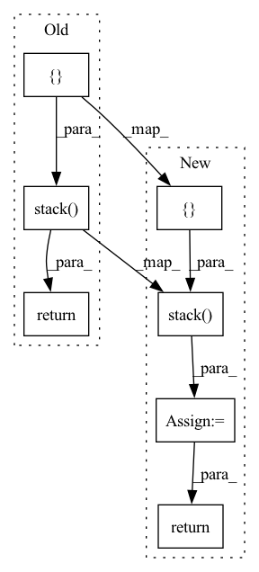

Pattern ID :41744

Before Change
def complex_matmul_2d(a, b):
// (batch, in_channel, x, y), (in_channel, out_channel, x, y) -> (batch, out_channel, x, y)
op = partial(torch.einsum, "bixy,ioxy->boxy")
return torch.stack([
op(a[..., 0], b[..., 0]) - op(a[..., 1], b[..., 1]),
op(a[..., 1], b[..., 0]) + op(a[..., 0], b[..., 1])
], dim=-1)
def forward(self, z, x):
// z.shape == [n_batches, 2 * flat_size, 1]
// x.shape == [n_batches, flat_size, 1]
After Change
// (in_channel, out_channel, x), (batch, in_channel, x, y) -> (batch, out_channel, x, y)
op = partial(torch.einsum, "iox,bixy->boxy")
c = torch.stack([
op(b0[..., 0], a[..., 0]) - op(b0[..., 1], a[..., 1]),
op(b0[..., 1], a[..., 0]) + op(b0[..., 0], a[..., 1])
], dim=-1)
op = partial(torch.einsum, "bixy,ioy->boxy")
out = torch.stack([
op(c[..., 0], b1[..., 0]) - op(c[..., 1], b1[..., 1]),
op(c[..., 1], b1[..., 0]) + op(c[..., 0], b1[..., 1])
], dim=-1)
return out
def forward(self, z, x):
// z.shape == [n_batches, 2 * flat_size, 1]
In pattern: SUPERPATTERN
Frequency: 5
Non-data size: 7
Instances
Fragment ID: 117018953
Project Name: alasdairtran/fourierflow
Commit Name: d44f34cefc973a288732dacab07df2393ddba030
Time: 2021-07-27
Author: alasdair.tran@gmail.com
File Name: fourierflow/modules/fourier_deq.py
M Class Name: SpectralConv2d
N Class Name: SpectralConv2d
M Method Name: complex_matmul_2d(3)
N Method Name: complex_matmul_2d(2)
M Parent Class: nn.Module
N Parent Class: nn.Module
M File Name: fourierflow/modules/fourier_deq.py
N File Name: fourierflow/modules/fourier_deq.py
M Start Line: 88
M End Line: 91
N Start Line: 64
N End Line: 80
'>
Before Change
wisdom_mask = torch.where(input_ids == mask_id, 1, 0)
desc_mask = torch.where(((input_ids != cls_id) & (input_ids != sep_id) & (input_ids != mask_id)), 1, 0)
return torch.stack([input_ids,
encodings["token_type_ids"],
encodings["attention_mask"],
wisdom_mask,
desc_mask], dim=1).to(self.device)
def encode(self, wisdom2desc: List[Tuple[str, str]]) -> BatchEncoding:
raise NotImplementedError
After Change
wisdom_mask = torch.where(input_ids == mask_id, 1, 0)
desc_mask = torch.where(((input_ids != cls_id) & (input_ids != sep_id) & (input_ids != mask_id)), 1, 0)
inputs = torch.stack([input_ids,
encodings["token_type_ids"],
encodings["attention_mask"],
wisdom_mask,
desc_mask], dim=1)
return inputs
def encode(self, wisdom2desc: List[Tuple[str, str]]) -> BatchEncoding:
raise NotImplementedError
'>
Fragment ID: 117018952
Project Name: wisdomify/wisdomify
Commit Name: fb77135cadc0232f913481c8ddae571b1721849b
Time: 2021-11-19
Author: tlrndk123@gmail.com
File Name: wisdomify/tensors.py
M Class Name: InputsBuilder
N Class Name: InputsBuilder
M Method Name: __call__(2)
N Method Name: __call__(2)
M Parent Class: TensorBuilder
N Parent Class: TensorBuilder
M File Name: wisdomify/tensors.py
N File Name: wisdomify/tensors.py
M Start Line: 73
M End Line: 77
N Start Line: 73
N End Line: 78
'>
Before Change
op4 = max_of_cols
op5 = max_all.expand_as(op1)
return torch.stack([op1, op2, op3, op4, op5]).permute(1, 0, 2, 3).reshape(N, -1, m)
After Change
op4 = max_of_cols
op5 = max_all.expand_as(op1)
output = torch.stack([op1, op2, op3, op4, op5], dim=2)
assert output.size() == (b, n, basis, in_features), output.size()
return output.view(b, n, basis*in_features)
'>
Fragment ID: 117018955
Project Name: mlelarge/graph_neural_net
Commit Name: dcd62781238a3f3db3e12a7b3006162c583e2e4c
Time: 2020-02-25
Author: waissfowl@gmail.com
File Name: models/layers.py
M Class Name: Features_2_to_1
N Class Name: Features_2_to_1
M Method Name: forward(2)
N Method Name: forward(2)
M Parent Class: nn.Module
N Parent Class: nn.Module
M File Name: models/layers.py
N File Name: models/layers.py
M Start Line: 105
M End Line: 119
N Start Line: 107
N End Line: 123
'>
Before Change
x_min = x_center - w / 2.
y_max = y_center + h / 2.
x_max = x_center + w / 2.
return torch.stack([y_min, x_min, y_max, x_max], dim=-1)
def generate_detections(
cls_outputs, box_outputs, anchor_boxes, indices, classes, image_scales):
After Change
x_min = x_center - w / 2.
y_max = y_center + h / 2.
x_max = x_center + w / 2.
outputs = torch.stack([y_min, x_min, y_max, x_max], dim=-1)
return outputs
def clip_boxes_(boxes, size):
'>
Fragment ID: 117018957
Project Name: sevakon/efficientdet
Commit Name: cc2e5246bcb32e8fd405e64eec12b70088f1f097
Time: 2020-05-25
Author: sevakonyakhin@gmail.com
File Name: utils/anchors.py
M Class Name: AnonimousClass
N Class Name: AnonimousClass
M Method Name: decode_box_outputs(2)
N Method Name: decode_box_outputs(2)
M Parent Class:
N Parent Class:
M File Name: utils/anchors.py
N File Name: utils/anchors.py
M Start Line: 31
M End Line: 31
N Start Line: 57
N End Line: 59